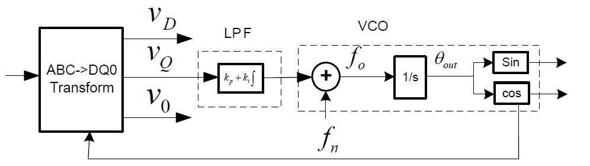

基于TI_C2000系列设计三相软件锁相环
3/2变换
3/2变换矩阵根据坐标轴初始位置的不同有不一样的形式。
这里取此情况：

Clark变换矩阵为：
Park变换矩阵为：
单同步坐标系软件锁相环SSRF_SPLL
易有：

PI控制器作为低通滤波器LPF，其后则作为压控振荡器VCO。
具体原理说明参见张兴：《PWM整流器及其控制》。
在连续域，可见上述系统是一个Ⅱ型系统，
记PI控制器为：
基于典型Ⅱ型系统可进行参数整定。得：
调节时间为：
对工频电力系统（50Hz），希望PLL响应时间能在一个周期内，即
取阻尼比，代入上式得整定的参数：
离散化，进行双线性变换，即取，得：
其中
可得差分方程为：
编写程序
matlab仿真
1 | clear; |
C2000控制器上的实现
普通逆变器通常使用IQ24。
这里为PLL选择IQ21。
1 | //SPLL_3ph_SRF_IQ.h |
1 | //SPLL_3ph_SRF_IQ.c |
1 | //在使用该锁相环的程序中,创建对象并初始化 |
程序流程为:

本博客所有文章除特别声明外，均采用 CC BY-NC-SA 4.0 许可协议。转载请注明来源 YILON！
相关推荐

2023-10-21
DSP基本概念
流水线操作与系统架构 CPU的执行指令可分为四步：...
2024-09-19
TI_DSP_C2000_driverlib与Sysconfig
driverlib 简述 driverLib是德州仪器为C2000微控制器提供的一个驱动库，它包含了大量的硬件抽象层（HAL）函数，用于简化微控制器的编程过程。 driverlib 库的代码组织通常遵循模块化设计，每个模块对应一个微控制器外设或功能模块。 每个模块都提供初始化函数、配置函数以及操作函数。开发者只需调用这些函数即可完成外设的配置和操作，避免手动处理低级别的寄存器操作。 由于 driverlib 提供了对硬件寄存器的抽象层，代码在不同的 C2000 器件之间的移植变得更容易。 TI通常将项目架构称为基于bit-filed的或基于driverlib的， 前者即所谓的“操作寄存器”式设计，是C2000Ware/device_support中的例程形式。 driverlib包含在C2000 Ware中，要使用此库，必须安装C2000 Ware。 driverlib的文件结构 默认位置安装C2000...
2024-01-25
TI_DSP_C2000系列应当注意的问题
TMS320C28x的数据类型 如图，在TMS320C28x中， 1Byte=16bit\mathbf{1 Byte = 16bit} 1Byte=16bit 指针、int、unsigned int、char、unsigned char都是16bit的。 这也可以在DSP28_Device.h中看到相关定义： 12345678910//--------------------------------------------------------------// For Portability, User Is Recommended To Use Following Data Type Size// Definitions For 16-bit and 32-Bit Signed/Unsigned Integers://typedef int int16;typedef long int32;typedef unsigned int Uint16;typedef unsigned long...
2023-12-09
TI_DSP_TMS320C28x_IQmath库
官网文档 参考链接 概述 德州仪器 TMS320C28x IQmath 库是一套高度优化的高精度数学函数库， 供C/C++程序员在TMS320C28x器件上将浮点算法无缝移植到定点代码中。 这些例程通常用于计算密集型实时应用，在这些应用中，最佳执行速度和高精度至关重要。 通过使用这些例程，可以获得比用标准ANSIC语言编写的同等代码快得多的执行速度。 IQmath库包含五部分： IQmath头文件 C 程序使用IQmathLib.h C++ 程序使用IQmathLib.h和IQmathCPP.h IQmath库 该库包含所有 IQmath 函数和查找表。该库有两个版本: IQmath.lib: 这是一个索引库，根据 CCS 10.x 中的选项，项目中将使用相应的 EABI 或 COFF 库。 该索引库使用IQmath_coff.lib和IQmath_eabi.lib库创建。 IQmath_f32.lib: 这是一个索引库，根据 CCS 10.x 中的选项，项目中将使用相应的 EABI 或 COFF 库。 该库可与使用 --float_support=fpu32...
2023-11-04
TI_DSP_TMS320F2812_AD转换单元
概述 ADC模块有以下特点： 12bit精度；(由于结果寄存器是16bit，因此需要将结果左移4位才能得到正确结果) 2个采样和保持器；（采样保持采集时间窗口有独立的预定标控制） 同时或顺序采样模式； 模拟输入电压范围0~3V； ADC时钟最高可配置为25MHz，即最高采样带宽为12.5MSPS； 16通道模拟输入； 自动排序功能支持16通道独立循环“自动转换”，每次转换的通道可以软件选择； 排序器可以工作在2个独立的8通道排序器模式，也可以工作在16通道级联模式； 排序器可工作在启动/停止模式，允许“多个排序触发”同步转换； F2810/F2811/F2812的B版本有增强的重叠排序器功能 AD转换公式为D=Vin−ADCLO3×(212−1)\rm{D = \frac{V_{in}-ADCLO}{3} \times (2^12 - 1)}D=3Vin−ADCLO×(212−1) 多个触发源： S/W 软件立即启动 EVA、EVB...
2023-11-11
TI_DSP_TMS320F2812_CCS工作流
非源工程下刷入固件 如果没有源工程而只有固件，通过配置.ccxml文件可以实现直接刷入。 打开CCS： 点击上方工具栏view->Target Cofigurations，会跳出对应窗口， 右键点击该窗口的User Defined文件夹，点击New Target Cofigurations, 弹出新建ccxml文件窗口。 命名完成后，弹出配置窗口： 当保存ccxml文件后， 当需要进行烧录时，先将设备通过烧录器连接到电脑上， 在User Defined文件夹找到对应的ccxml文件， 右键，点击"Launch selected Cofiguration"， 即跳出烧录界面： 点击Connect...